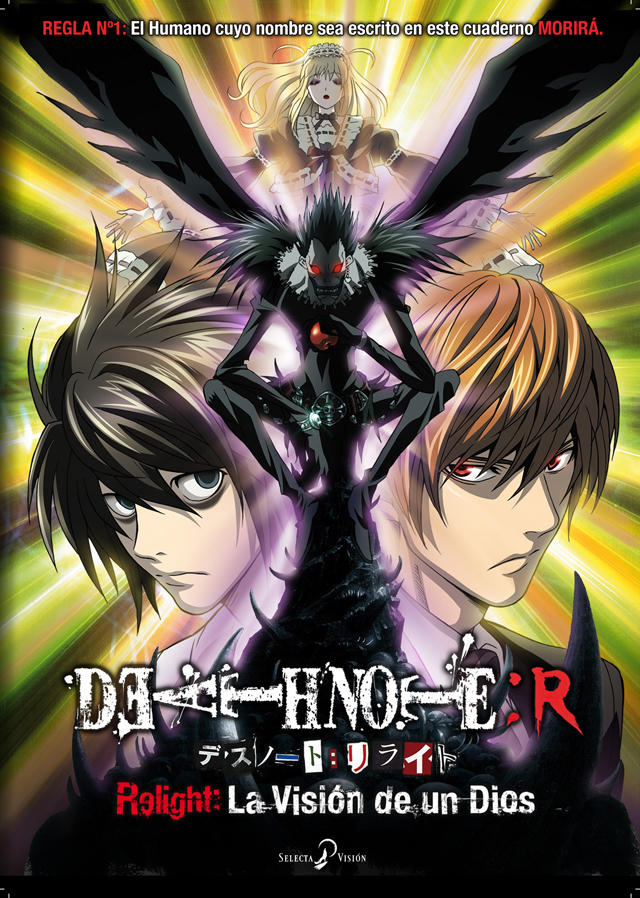

INICIO
CAPITULOS
DEATH NOTHE PERSONAJES
LIGHT YAGAMI
MISA AMANE
RYUK
REM
L. LAWLIET
NATHAN RIVER
MICHAEL KEEHL
KIYOMI TAKADA
TERU MIKAMI
Nayeli Ramírez Juárez todos los derechos reservados ©2015
|
DEATH NOTHE
La serie de anime Death Note contiene 37 episodios dirigidos por Tetsuro
Araki y animado por Madhouse. Esta serie se basa en el manga escrito por Tsugumi Ohba e ilustrado por
Takeshi Obata.
Los shinigami (dioses de la muerte) usan los poderes que les otorga la Death Note (libreta de la muerte)
para terminar con la vida de los humanos y asi aumentar la de ellos. La historia comienza cuando un shinigami de nombre Ryuk,
deja caer una de las dos Death Note que posee; solo por puro aburrimiento. Light Yami es un excelente estudiante japonés
que tiene una vida aburrida; esto cambia cuando encuentra un cuaderno tirado en el suelo conocido como Death Note, cualquier
humano cuyo nombre esté escrito en el cuaderno morirá, Light decide utilizar este poder para crear un mundo perfecto sin
criminales. Pero cuando los criminales comienzan a morir de forma masiva, las autoridades envian al legendario detective L
en busca del asesino. Con L pisándole los talones, podrá Light mantener su propósito incluso arriesgando su vida.

|